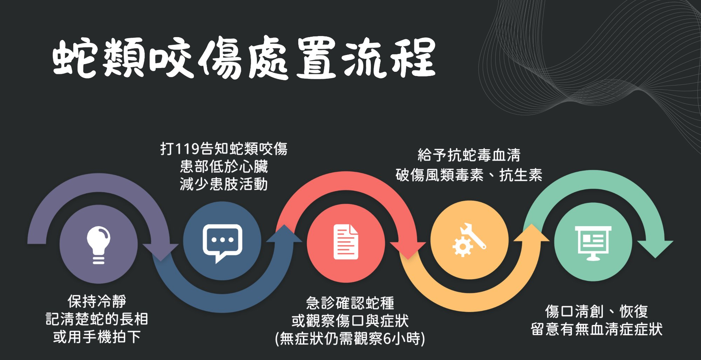
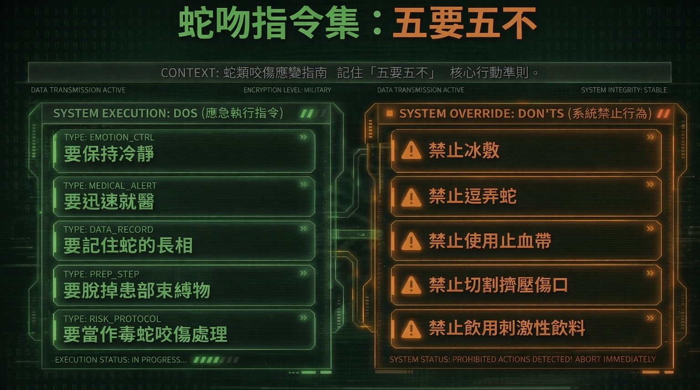
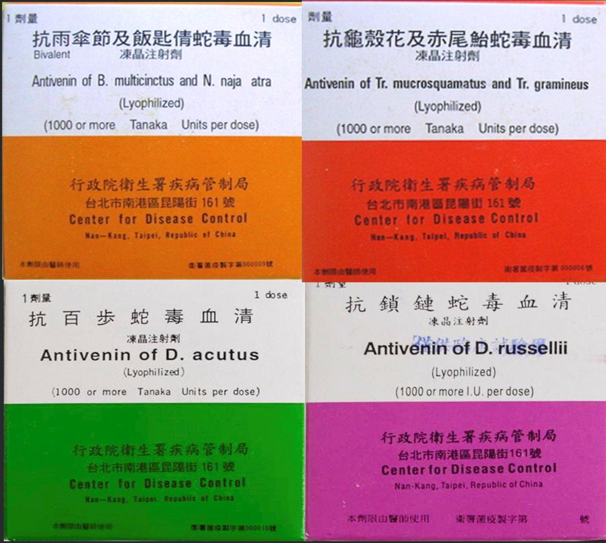

毒蛇咬傷急救指南
蛇類咬傷後的黃金處置時間與正確步驟，若不確定蛇種一律當作毒蛇咬傷處置。

被蛇咬傷後，保持冷靜是第一要務。恐慌會加速心跳、加快毒素擴散。立即撥打 119 或前往有血清的醫院急診。
民間流傳許多「急救方法」，但大多數不但無效，甚至會造成二次傷害。以下是最常見的錯誤行為：
用嘴吸出毒液——口腔黏膜會吸收毒素，反而讓施救者中毒。此方法已被醫學否定。
用布條或止血帶綁緊患肢——不當加壓會造成局部壞死，加重組織損傷。
切開或擠壓傷口——切開、擠壓傷口無法有效排毒，反而增加感染、出血風險，並可能加速毒素擴散。
飲酒或服用止痛藥——酒精會加速血液循環，加快毒素擴散；部分止痛藥也可能與蛇毒產生不良反應。
冰敷患部——冰敷會造成血管收縮，導致毒素集中於局部組織，加重壞死風險，切勿冰敷。
逗弄或試圖捕捉蛇——即使蛇看似靜止或已死亡，仍可能反射性咬人。遠離蛇是避免二次咬傷最重要的原則。

台灣毒蛇依毒素類型分為出血毒、神經毒，以及兼具兩者的混合性毒（出血伴神經毒），症狀表現不同，送醫時應告知醫師蛇的外觀特徵。
以破壞凝血系統與血管完整性為主，導致局部劇烈腫脹、瘀血與出血，嚴重時可引發內出血與組織壞死。其特徵是症狀外顯且進展快速，臨床風險在於失血與不可逆的組織損傷。
代表蛇種：赤尾青竹絲、龜殼花、百步蛇。
主要作用抑制神經傳導，導致肌肉無力、眼瞼下垂與呼吸衰竭。其危險在於早期局部症狀不明顯，但可在短時間內進展為致命的呼吸麻痺。
代表蛇種：雨傘節、眼鏡蛇（伴有一點出血症狀）。
兼具「出血」與「神經」的雙重殺傷力。猛烈的凝血異常、溶血與劇痛的出血毒基底上，同時伴隨著神經麻痺與肌肉無力症狀。這種複合型毒液極易迅速引發急性腎衰竭及多重器官衰竭。
代表蛇種：鎖鏈蛇。
台灣並非每間醫院都備有抗蛇毒血清，建議事先了解附近有儲備的醫療院所。衛福部全國解毒劑儲備網提供抗蛇毒血清儲備點查詢系統，可作為送醫參考依據。
⚠ 注意：該系統顯示的庫存量非即時數據，僅供參考，實際備量請直接致電醫院確認。遇緊急狀況請直接撥打 119，由救護人員協助判斷送往適合的醫院。
抗蛇毒血清儲備點查詢系統 → smis.cdc.gov.tw ↗
疾管署系統 · 非即時庫存 · 僅供送醫參考
💊 人用抗蛇毒血清費用由健保全額支付
動物用抗毒蛇血清申請與查詢 → tw-tvma.org ↗
台灣獸醫師公會 · 寵物或動物遭蛇咬傷時之血清申請路徑
💰 動物用血清一劑約 28,000 元，需自費
緊急救護：119
毒物諮詢專線：02-2871-7121（林口長庚醫院毒物科，24 小時）
台灣目前有四種抗蛇毒血清，針對6大毒蛇，由疾管署負責生產與供應，包括雙價與單價型，均為凍晶注射劑，需由醫師依蛇種與症狀判斷使用。血清需冷藏保存，非一般常溫藥品。
抗雨傘節及飯匙倩蛇毒血清
Antivenin of B. multicinctus and N. naja atra
對應蛇種：雨傘節、眼鏡蛇（飯匙倩）
神經毒
抗龜殼花及赤尾鮐蛇毒血清
Antivenin of Tr. mucrosquamatus and Tr. gramineus
對應蛇種：龜殼花、赤尾青竹絲
出血毒
抗百步蛇毒血清
Antivenin of D. acutus
對應蛇種：百步蛇
出血毒
抗鎖鏈蛇毒血清
Antivenin of D. russellii
對應蛇種：鎖鏈蛇
混合毒（出血伴神經）

抗蛇毒血清為處方藥品，需由醫師評估後施打。部分患者可能對馬血清蛋白產生過敏反應，施打前醫師會進行評估與準備。切勿自行購買或施打。